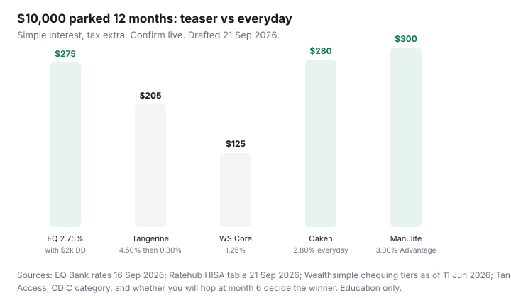

Personal Finance · Canada
Where to Park an Emergency Fund in Canada: HISA Decision Framework (Not a Rate Chase)
Canadians park emergency cash in two bad places: a Big-5 chequing package that pays next to nothing, or a teaser HISA that looks like 4.50% until month six. The job of an emergency fund is not to win a rate roundup. It is to be there on a Tuesday when the furnace dies, insured, and earning a respectable everyday rate while you sleep.
This is a 12-month parking framework, not a stock-picking article. Rates below are public figures used 21 Sep 2026. They move when the Bank of Canada moves. Confirm on the issuer’s page before you open anything.
Disclosure: High-interest savings accounts and no-fee cash accounts are offer types. Saving Optimizer may later add partner links. We do not currently claim bank, fintech, or deposit-broker partnerships, and we do not invent live bonuses. This is education, not deposit advice. Confirm CDIC membership, rates, and access rules with the institution.
Key takeaways
- Keep true emergency cash in a deposit HISA or hybrid cash account, not in a near-zero chequing float and not in ETFs you would have to sell in a bad week.
- Compare 12-month yield, not the teaser. Ratehub’s table on 21 Sep 2026 listed Tangerine at 4.50% for the first 5 months and EQ Bank Personal Account at 2.75% with no teaser labelled.
- Access is a feature: Interac, ATM, notice periods, and payroll timing beat 20 extra basis points you cannot reach on a Saturday.
- CDIC covers eligible deposits $100,000 per category, per member institution (principal and interest). EQ Bank and Equitable Bank share one member. Wealthsimple chequing is not a bank; cash sits in trust at CDIC members.
- Use two buckets: a small spending float at the bill-pay bank, and a true emergency HISA you re-shop quarterly without touching payroll.
Separate emergency cash from investing money you will not touch for years
An emergency fund pays rent, a deductible, a flight home, or a gap between jobs. It is three to six months of must-pay costs for most middle-aged households — not a net-worth flex. Money you will not need for five years belongs in a registered or non-registered investment account, with its own rules. Mixing the two is how people either (a) raid the TFSA in a panic and trip the same-year recontribution trap, or (b) leave $25,000 in chequing “just in case” for a decade.
Label the account. EQ Bank lets you open up to eight Personal Accounts; Tangerine and Simplii let you nickname savings pots. The label is the product. “Emergency — do not spend” is more useful than another 10 basis points you will forget.
Do not use a non-redeemable GIC as the whole buffer. Ratehub (4 Sep 2026 insight) noted 1- to 5-year GIC bands around 2.25%–3.85% while HISAs ran 1.50%–4.75% including promos. A GIC can sit beside a HISA for money you know you will not need for 12 months. It is a poor sole emergency account if breaking it costs interest or a delay.
Promo teaser rates vs everyday rates: how to compare total yield over 12 months
The Bank of Canada held the overnight rate at 2.25% on 2 Sep 2026 (Ratehub). Deposit rates were relatively stable that week. Promos still exist. The worksheet is simple interest for a labelled $10,000 parked the whole year — taxes extra, compounding ignored so you can see the cliff:
| Parking option | Public rate path | Year-one interest sketch |
|---|---|---|
| EQ Bank Personal Account (with qualifying $2,000/month direct deposit) | 2.75% ongoing (1.00% base + 1.75% bonus). EQ rates page effective 16 Sep 2026. | About $275 |
| EQ Bank Personal Account (no qualifying deposit) | 1.00% base | About $100 |
| Tangerine Savings (new-client promo path) | Ratehub: 4.50% first 5 months. Everyday rate after the promo is typically far lower (2026 roundups cite 0.30% — verify on tangerine.ca). | About $205 if 4.50% for 5/12 and 0.30% for 7/12 |
| Simplii High-Interest Savings | Ratehub: 4.60% first 5 months. Everyday rate after is a separate posted number — confirm live. | Do the same 5-month / 7-month split with the live everyday rate |
| Wealthsimple chequing (Core, no extra boost) | 1.25% under $100,000 in assets (Wealthsimple, data as of 11 Jun 2026) | About $125 |
| Oaken / Manulife Advantage (everyday HISAs) | Ratehub: 2.80% and 3.00% with $0 fee rows | About $280 / $300 — check ATM and bill-pay fit |
| Big-5 chequing leftover | Often 0%–0.05% on the spending account | About $0–$5, plus the monthly package fee you already pay |

The teaser can win if you will actually move the money when it dies. If you will not, EQ’s 2.75% path (with payroll) or another everyday HISA usually beats a 4.50% that becomes 0.30%. Interest in a non-registered HISA is taxable (T5). A HISA inside a TFSA changes the tax line — and uses contribution room. Emergency cash often stays non-registered so a withdrawal does not collide with TFSA room.
Access needs: Interac, ATM, notice accounts, and payroll timing
Write four access facts before you chase 15 extra basis points:
- How you pay the emergency. Interac e-Transfer to a landlord, Visa debit at a mechanic, or cash at an ATM. EQ Bank reimburses Canadian ATM surcharges up to $5, five times a month, and does not take cash deposits. Simplii uses 3,400+ CIBC ATMs and can take cash at those machines. Tangerine uses Scotiabank ABMs.
- How fast the money lands. EQ e-Transfers are generally immediate; EFTs to a linked bank take two to three business days (EQ public help). A 10-day or 30-day notice savings account (EQ: 2.35% / 2.75% on 16 Sep 2026) is a poor sole emergency pot if you cannot wait.
- Payroll. EQ’s 2.75% needs qualifying direct deposits of at least $2,000 a month. If payroll stays at the Big-5 for a mortgage offset or a branch habit, you earn 1.00% unless another eligible deposit qualifies — read EQ’s eligible-deposit list.
- Holds. Mobile cheque deposit at Wealthsimple is described as about six business days. Do not park the only buffer where a deposited insurance cheque is frozen.
Notice accounts are a second sleeve for money you can schedule (property tax, a known deductible). They are not the Tuesday-furnace sleeve.
CDIC / deposit insurance: how coverage categories work across banks
CDIC (pages used 21 Sep 2026) insures eligible deposits — chequing, savings, HISAs, GICs, term deposits, foreign-currency deposits — up to $100,000 including principal and interest, per category, per member institution. Stocks, bonds, ETFs, mutual funds, and crypto are not eligible. Categories include deposits in one name, joint, RRSP, RRIF, TFSA, RDSP, RESP, FHSA, and trust.
Implications for parking:
- Your unregistered HISA and unregistered chequing at the same member share the $100,000 “one name” bucket.
- EQ Bank is a trade name of Equitable Bank. EQ states deposits under EQ Bank and Equitable Bank are aggregated in the same CDIC category.
- A TFSA HISA is a separate category from your unregistered HISA at the same member.
- Credit unions use provincial insurers (FSRA in Ontario, DGCM in Manitoba, and so on) — Ratehub flagged Saven at 2.85% under FSRA, not CDIC. Read the logo on the site.
- Some investment-shop “HISAs” are CIPF-framed (Ratehub listed CI Direct Investing as CIPF). CIPF is dealer insolvency protection, not a CDIC deposit guarantee and not market-loss insurance.
If the household buffer is above $100,000 unregistered at one member, split institutions or use another eligible category — after you confirm membership with CDIC’s search tool, not a blog table.
Build a two-bucket system: spending float + true emergency HISA
Bucket A is the bill-pay account: rent PAD, hydro, cards. Keep one to two weeks of cashflow there so NSF fees never happen. NSF at a Big-5 is often in the $45 range; the exact tariff is on your package. Bucket B is the emergency HISA at a digital bank or a high everyday HISA. Auto-transfer from A to B the day after payday — see pay yourself first.
Do not run every PAD from the HISA. Promo HISAs and notice accounts punish surprise withdrawals. The spending bank can be Simplii or Tangerine with a $0 package; the HISA can be EQ, Oaken, Manulife, or a credit union. A no-fee stack is how you stop paying $15–$30 a month for the privilege of earning 0% on the float.
Re-shop rates quarterly without disrupting bill pay
Calendar a 15-minute rate check in January, April, July, and October — after Bank of Canada decision weeks when possible. Pull Ratehub or the issuer pages. If a teaser dies, move Bucket B only. Leave payroll and PADs on Bucket A until you have run two cycles at a new everyday bank. That is the same discipline as the 14-day switch plan.
Re-shopping is not day-trading. It is refusing to sit on 0.30% for eleven months because opening a second HISA felt like paperwork. Two HISAs at two CDIC members is normal. Five HISAs you cannot name is a hobby.
Sources & date stamps
- Ratehub.ca high-interest savings table — rates updated 21 Sep 2026, 1:22 p.m.; EQ Personal 2.75%; EQ 10-day notice 2.35%; Tangerine 4.50% first 5 months; Simplii HISA 4.60% first 5 months; Oaken 2.80%; Manulife Advantage 3.00%; BoC overnight 2.25% held 2 Sep 2026.
- EQ Bank rates page — effective 16 Sep 2026; Personal Account 1.00% base / 2.75% bonus; notice 2.35% / 2.75%; TFSA/FHSA/RRSP cash 1.50%.
- EQ Bank Personal Account — $2,000/month qualifying direct deposit for 2.75%; ATM surcharge rebate up to $5 × 5/month; Equitable Bank CDIC aggregation.
- CDIC “What’s covered” — $100,000 per category per member; eligible vs ineligible products (used 21 Sep 2026).
- Wealthsimple chequing page — 1.25% / 1.75% / 2.25% by asset tier; CDIC via partners, Wealthsimple is not a CDIC member (data as of 11 Jun 2026).
Frequently asked questions
Should I keep my emergency fund in a TFSA HISA?
Only if you will not need to recontribute the same year after a withdrawal. CRA adds TFSA withdrawals back on 1 January of the next year, not the next day. Many households keep the true emergency pot unregistered so a furnace bill does not create a 1% per month excess-TFSA tax. Confirm room in CRA My Account.
Is a 4.50% promo always better than EQ’s 2.75%?
Not over 12 months if you stay after the teaser. A labelled $10,000 at 4.50% for five months then 0.30% for seven months is about $205, versus about $275 at 2.75% all year (simple interest, 21 Sep 2026 public figures). Hopping promos can reverse that — only if you actually hop.
Does CDIC cover a HISA at a digital bank?
If the issuer is a CDIC member and the product is an eligible deposit. EQ Bank (Equitable Bank) and Tangerine are members. Credit unions use provincial insurers. Some brokerage cash products are CIPF-framed. Check CDIC’s member search and the account’s own disclosure.
What about EQ’s notice savings rates?
On 16 Sep 2026 EQ posted 2.35% (10-day) and 2.75% (30-day). Higher rate for a withdrawal delay. Fine for a known bill; a poor only emergency account if you cannot wait 10–30 days.
How much should I keep in the spending float versus the HISA?
Enough in the bill-pay account to cover PADs until the next payday plus a small NSF buffer. The rest of the three-to-six-month target sits in the HISA. Exact months depend on job stability and how irregular your income is.